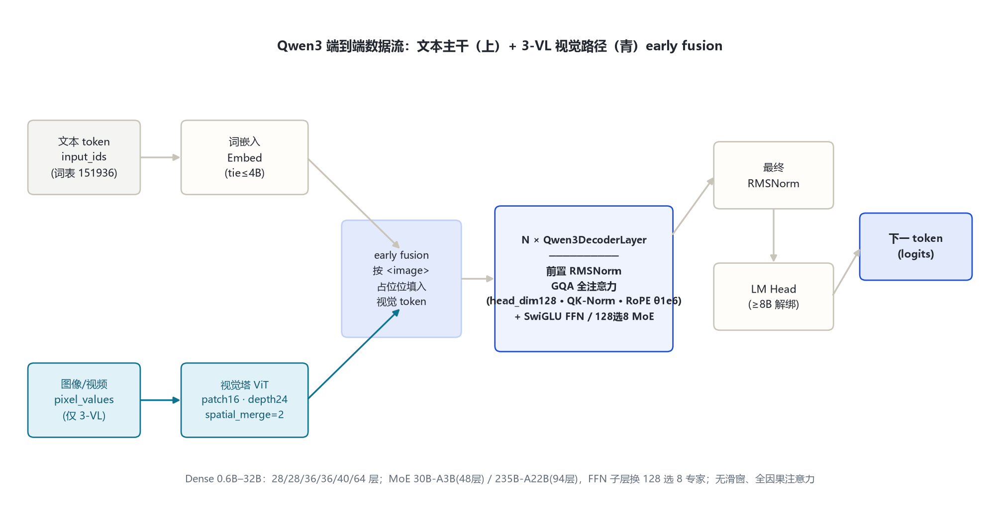
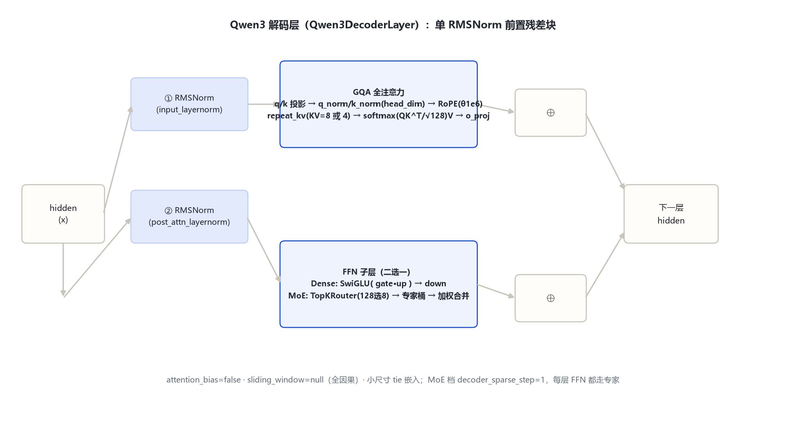
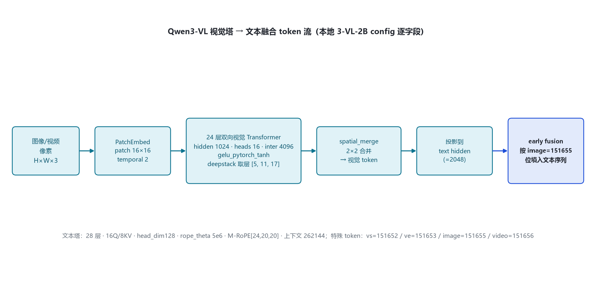

本页以 各变体真实 config.json（本地 Qwen3-0.6B、Qwen3-VL-2B-Instruct，及 hf-mirror 拉取的 1.7B/4B/8B/14B/32B/30B-A3B/235B-A22B）与 transformers 源码（本地 E:\transformers，models\qwen3\）为唯一依据。家族分三支：Dense（0.6B–32B）、MoE（30B-A3B / 235B-A22B，128 专家选 8）、多模态（3-VL / 3-ASR / 3-Omni）。
八档文本塔字段全部来自官方 config（2026-10-26 经 hf-mirror 逐字段核对；0.6B 为本地 config）。共用同一主干：RMSNorm 前置残差、SwiGLU FFN、GQA、head_dim 128、逐头 Q/K RMSNorm。
| 字段 | 0.6B | 1.7B | 4B | 8B | 14B | 32B | 30B-A3B | 235B-A22B |
|---|---|---|---|---|---|---|---|---|
| 入口类 | Qwen3ForCausalLM | 同左 | 同左 | 同左 | 同左 | 同左 | Qwen3MoeForCausalLM | Qwen3MoeForCausalLM |
| 形态 | Dense | Dense | Dense | Dense | Dense | Dense | MoE | MoE |
| hidden_size | 1024 | 2048 | 2560 | 4096 | 5120 | 5120 | 2048 | 4096 |
| 层数 | 28 | 28 | 36 | 36 | 40 | 64 | 48 | 94 |
| Q / KV 头 | 16 / 8 | 16 / 8 | 32 / 8 | 32 / 8 | 40 / 8 | 64 / 8 | 32 / 4 | 64 / 4 |
| head_dim | 128 | 128 | 128 | 128 | 128 | 128 | 128 | 128 |
| intermediate | 3072 | 6144 | 9728 | 12288 | 17408 | 25600 | 6144fallback | 12288fallback |
| 专家（总/激活） | — | — | — | — | — | — | 128 / 8moe_inter 768 | 128 / 8moe_inter 1536 |
| tie 嵌入 | true | true | true | false | false | false | false | false |
| vocab | 151936 | 151936 | 151936 | 151936 | 151936 | 151936 | 151936 | 151936 |
| max_position | 40960 | 40960 | 40960 | 40960 | 40960 | 40960 | 40960 | 40960 |
| rope_theta / 滑窗 | 1e6 · sliding_window=null（全因果注意力，八档统一） | |||||||
要点：① 八档全部 sliding_window=null——注意力从 Qwen2/2.5 的滑窗回到全注意力；② head_dim 统一 128，Q 输出维 = Q 头数×128；③ MoE 两档 decoder_sparse_step=1（每层走专家），128 选 8，config 中无共享专家字段（与 Qwen3.5 MoE 的显式共享专家不同）。
文本 token → 词嵌入 → N 个 DecoderLayer（前置 RMSNorm：GQA 全注意力 + SwiGLU/MoE-FFN，均带残差）→ 最终 RMSNorm → LM Head。3-VL 多一路：图像/视频 patch 经视觉塔编码、spatial_merge 压缩后按 image 占位 early fusion 进同一序列。

Qwen3DecoderLayer（modeling_qwen3.py:275-315）：单 RMSNorm 前置（无 post-norm），两组残差子层。Dense 与 MoE 仅 FFN 子层不同。

思维块以文本标记 <think>...</think> 编码进同一输出流。硬开关 enable_thinking（默认 True）；软切换在 user/system 消息加 /think 或 /no_think，多轮跟随最近指令。
Q/K 投影后、RoPE 前各过维度=head_dim 的 RMSNorm（modeling_qwen3.py:229-230, 244-245）；缩放固定 head_dim^-0.5 = 128^-0.5。
Dense 八档 KV 头恒为 8；MoE 两档为 4。运行时 repeat_kv 把 K/V 复制到 Q 头数（分组 2:1 到 16:1）。
TopKRouter：线性打分 → softmax → top-8 归一化权重 → 专家桶分 token 加权合并（modeling_qwen3_moe.py:248-280）。
| 尺寸 | Q 头 | KV 头 | GQA 分组 | head_dim | Q 输出维 |
|---|---|---|---|---|---|
| 0.6B / 1.7B | 16 | 8 | 2:1 | 128 | 2048 |
| 4B / 8B | 32 | 8 | 4:1 | 128 | 4096 |
| 14B | 40 | 8 | 5:1 | 128 | 5120 |
| 32B | 64 | 8 | 8:1 | 128 | 8192 |
| 30B-A3B | 32 | 4 | 8:1 | 128 | 4096 |
| 235B-A22B | 64 | 4 | 16:1 | 128 | 8192 |
源码：modeling_qwen3.py:231 仅当 layer_type=="sliding_attention" 才赋 sliding_window；qwen3 config 无 layer_types 字段，故全部层走全因果注意力。
| 字段（vision_config） | 取值 | 字段 | 取值 |
|---|---|---|---|
| hidden_size | 1024 | depth（层数） | 24 |
| num_heads | 16 | intermediate | 4096 |
| patch_size | 16 | temporal_patch_size | 2 |
| spatial_merge_size | 2 | out_hidden_size | 2048（=文本 hidden） |
| hidden_act | gelu_pytorch_tanh | deepstack 取层 | [5, 11, 17] |
文本塔侧：hidden 2048 · 28 层 · 16Q/8KV · head_dim 128 · inter 6144 · rope_theta 5e6 · mrope_section=[24,20,20]（M-RoPE）· 上下文 262144。transformers v5 用 AutoModelForImageTextToText 加载。

| token | ID | 含义 | 来源 |
|---|---|---|---|
| bos_token_id | 151643 | <|im_start|> 会话开始 | 文本 config |
| eos_token_id | 151645 | <|im_end|> / 序列结束 | 文本 config |
| 思维标记 | <think> </think> | thinking 块（文本内编码，非离散 special id） | 官方 model card |
| 软切换指令 | /think /no_think | 用户/系统消息内文本指令 | 官方 quickstart |
| vision_start / end | 151652 / 151653 | 图像块起止（3-VL 顶层） | 本地 3-VL config |
| image / video token | 151655 / 151656 | 图像/视频占位（3-VL 顶层） | 本地 3-VL config |
词表 vocab_size=151936（Qwen1–Qwen3 沿用；3.5 起扩到 248320）。思维块是输出序列里的普通文本标记，不新增离散 special token。
| 维度 | Qwen2.5（基线） | Qwen3（家族） |
|---|---|---|
| 推理行为 | 无原生思维 | 原生 thinking（默认开 + /think /no_think 软切换） |
| 注意力 | GQA + 滑窗（4096 + max_window_layers） | 回归全注意力（sliding=null），新增逐头 Q/K RMSNorm |
| head_dim | 由 hidden/heads 隐式 | 显式 head_dim=128 |
| MoE | Qwen2-MoE 57B-A14B | 两档 MoE：30B-A3B / 235B-A22B，128 选 8，每层走专家 |
| 上下文 | 32768 | 40960（文本）；3-VL 扩到 262144 |
| 视觉塔 | 2.5-VL：patch 14、128K | 3-VL：patch 16、rope θ 5e6、M-RoPE、262144 |
| 词表 | 151936 | 151936（不变） |
| MTP / 变体 | 无 MTP | MTP（qwen3_next）、3-ASR、3-Omni-MoE |
核验日期 2026-10-26。MoE 无共享专家系以本地 config 字段为准；3-VL 4B/8B/32B 文本塔沿用对应 Dense 尺寸（官方 model card）。